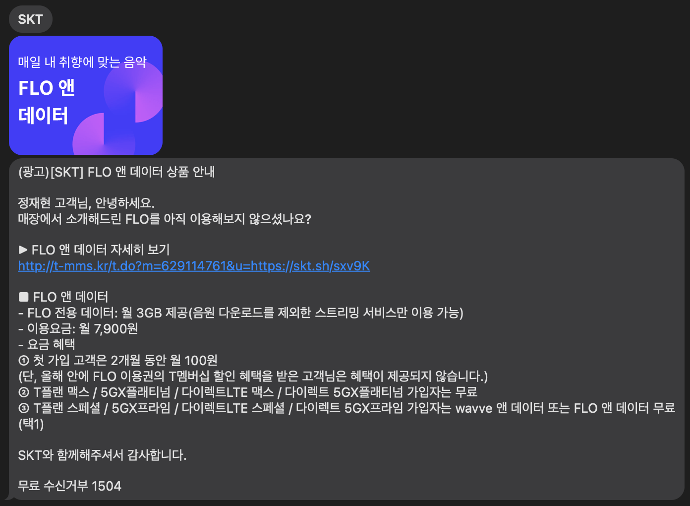

FLO 앤 데이터 상품 안내
정재현 고객님, 안녕하세요.
매장에서 소개해드린 FLO를 아직 이용해보지 않으셨나요?
▶ FLO 앤 데이터 자세히 보기
■ FLO 앤 데이터
- FLO 전용 데이터: 월 3GB 제공(음원 다운로드를 제외한 스트리밍 서비스만 이용 가능)
- 이용요금: 월 7,900원
- 요금 혜택
① 첫 가입 고객은 2개월 동안 월 100원
(단, 올해 안에 FLO 이용권의 T멤버십 할인 혜택을 받은 고객님은 혜택이 제공되지 않습니다.)
② T플랜 맥스 / 5GX플래티넘 / 다이렉트LTE 맥스 / 다이렉트 5GX플래티넘 가입자는 무료
③ T플랜 스페셜 / 5GX프라임 / 다이렉트LTE 스페셜 / 다이렉트 5GX프라임 가입자는 wavve 앤 데이터 또는 FLO 앤 데이터 무료(택1)
SKT와 함께해주셔서 감사합니다.
무료 수신거부 1504
